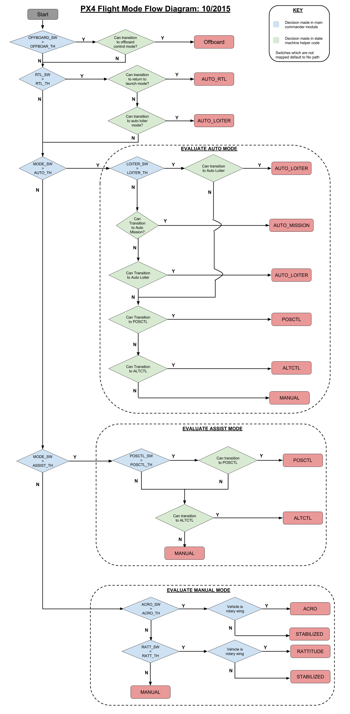

비행 모드
비행 모드는 오토파일럿의 사용자 입력에 대한 응답 방식과 기체 움직임 제어 방식을 정합니다. 오토파일럿에서 나오는 제어 수준 및 형식을 기반으로 manual, assisted, auto 모드로 대략적으로 나눕니다. 조종사는 원격 조종 장비의 스위치나 지상 통제 장치로 비행 모드를 전환합니다.
모든 종류의 기체에서 모든 비행 모드를 지원하는것은 아니며, 어떤 모드는 (아래 설명대로) 기체에 따라 다르게 동작합니다. 마지막으로 어떤 비행 모드는 특정 비행 전중 상황(예: GPS 잠금 장치, 항속 센서, 축 기반 기체 자세 감지)에만 의미가 있습니다. 시스템은 적절한 조건을 만나지 않으면 다른 모드로 전환하게 하지 않습니다.
아래 절에서 비행 모드를 대략적으로 알려드리겠습니다. 비행 모드 평가 다이어그램에서는 PX4에서 새 모드로 전환하는 조건을 보여줍니다.
더 자세한 사용자용 비행 모드 문서는 PX4 사용자 안내서에서 찾을 수 있습니다.
비행 모드 정리
수동 비행 모드
"수동" 모드는 사용자가 원격 조종기(또는 조이스틱) 제어 방식으로 기체를 직접 조종하는 모드입니다. 기체의 움직임은 항상 스틱의 움직임을 따르지만, 모드에 따라 반응의 레벨/타입은 변합니다. 예를 들어, 숙력된 비행사는 스틱위 위치를 엑츄에이터에 직접전달하는 모드를 사용할 수 있지만, 초보자는 스틱위치의 갑작스런 변환에 적게 반응하는 모드를 선택할 것입니다.
고정익 / 탐사선 / 보트
- MANUAL: 조종사의 컨트롤이 (리모트컨트롤러로부터 오는 가공되지 않은 사용자의 입력) 출력 믹서에 직접적으로 전달됩니다.
- STABILIZED: 조종사의 pitch, roll 입력이 angle 커맨드로 자종조종시스템에 전달됩니다. 반면에 yaw 입력은 출력 믹서를 통해 방향타에 직접적으로 전달됩니다 (수동 조종). 만약 리모트컨트롤러의 roll, pitch 스틱이 중립이면, 자동조종장치는 roll과 pitch의 각을 0으로 조절합니다. 따라서 어떠한 바람의 방해에서 기체를 안정되게 합니다. 그러나 이 모드에서 기체 위치는 오토파일럿으로 제어하지 않으므로, 바람에 밀릴 수 있습니다. 0이 아닌 roll 입력은 기체가 옆으로 미끄러지지 않도록 균형선회 합니다. 균형선회 하는 동안, 방향타는 옆으로 미끄러지는 것을 방지하고 어떤 yaw 입력이 더해집니다.
- ACRO: 조종사의 입력이 roll, pitch, yaw rate 명령어로 자동조종장치에 전달됩니다. 자동조종장치는 angular rate를 제어합니다. Throttle은 출력 믹서에 직접적으로 전달됩니다.
멀티콥터:
MANUAL/STABILIZED 조종사의 입력은 roll, pitch angle 명령어와 yaw rate 명령어로 전달됩니다. Throttle은 출력 믹서에 직접적으로 전달됩니다. 자동조종장치는 자세를 제어합니다. 즉, RC 스틱이 중립일 때 roll 과 pitch angle을 0으로 조절합니다. 따라서 수평을 유지합니다. 그러나, 이 모드에서는 자동조종장치가 기체의 포지션을 제어하지는 않습니다. 따라서 포지션은 바람에 의해 바뀔 수 있습니다.
멀티콥터는 Manual 모드와 Stabilized 모드가 동일합니다.
ACRO: 조종사의 입력은 roll, pitch, yaw rate 명령어로 자동조종장치에 전달됩니다. 자종조종장치의 angular rate는 제어하지만 자세는 제어하지 않습니다. 따라서, RC 스틱이 중립이면 수평이 되지 않을 것입니다. 이것은 멀티콥터가 완전히 뒤집히는 것을 허용합니다. Throttle은 출력 믹서에 직접적으로 전달됩니다.
RATTITUDE 조종사의 입력이 threshold보다 높으면 roll, pitch, yaw rate 명령어로 자동조종장치에 전달됩니다. 예를 들어 RC 스틱 중심에서 확실히 멀어질 때 입니다. 그렇지 않으면 명령어가 전달되지 않습니다. Throttle은 출력 믹서에 직접적으로 전달됩니다. 다시 말해, 자동조종장치는 RC 스틱이 많이 움직이면 (ACRO모드 처럼) anulara rate 컨트롤러 역할을 하지만 그렇지 않으면 자동조종장치는 자세 컨트롤러 역할을 합니다 (Stabilized모드 처럼)
보조 비행 모드
보조 모드 또한 사용자가 조종하는 것이지만 몇몇의 자동화된 보조를 제공합니다. 예를 들어, 바람에 맞서 기체를 자동적으로 고정하는 것입니다. 보조모드는 제어 비행 및 복원을 쉽게 합니다.
- ALTCTL (고도 제어)
- 고정익: roll, pitch, yaw RC 스틱이 중립일 때 ( 또는 특정 데드밴드 범위 이하) 기체는 직선 및 수평 비행으로 돌아와 현재 고도를 유지합니다. x와 y의 위치는 바람에 의해 이동될 것입니다.
- 멀티콥터: roll, pitch, yaw 입력은 stabilized 모드에 있게 됩니다. Throttle 입력은 미리 정의된 최대 속도에서 오르거나 내리는 신호를 보냅니다. Throttle은 큰 데드존을 갖게 됩니다. 가운데의 throttle은 고도를 안정되게 유지합니다. 오토 파일럿은 고도만 조종하기에 x, y 좌표 방향은 바람에 밀릴 수 있습니다.
- POSCTL (위치 제어)
- 고정익: 중립 입력은 (중앙 RC 스틱) 수평 비행을 제공하며 바람에 맞서 직선 비행을 해야하는 경우 똑바로 가기 힘들것입니다.
- 멀티로터 roll은 좌우 속력을 조절하고, pitch는 앞뒤 속력을 조절합니다.로 Yaw 는 MANUAL 모드처럼 yaw 속도를 조절합니다. Throttle은 ALTCTL모드 처럼 오르내림을 조절합니다. 이것은 roll, pitch, throttle 스틱이 중립적일때 자동조종장치에 의해 기체가 어떠한 바람에도 안정적으로 있을 수 있다는 것입니다.
자동 비행 모드
"자동" 모드는 컨트롤러가 사용자의 입력을 거의 필요로 하지 않는 모드입니다(예. 이륙, 착륙과 비행 임무).
- 자동_선회 (로이터)
- 고정익: 비행기는 자세와 고도를 유지하면서 선회한다 (또는 약간 위를 배회할 수도 있지만, 그 정도는 괜찮음).
- 멀티콥터: 멀티콥터는 자세와 고도를 유지하면서 제자리비행 하거나 선회한다.
- 자동_착륙 (착륙)
- 고정익: 비행기는 출발지로 돌아와 그 위를 선회한다.
- 멀티콥터: 멀티콥터의 현재의 고도에서 직선비행하여 돌아오거나(만약 출발 고도보다 높다면 RTL_RETURN_ALT) RTL_RETURN_ALT 한후에 착륙한다.
- 자동_임무 (임무)
비행 모드 평가 다이어그램
